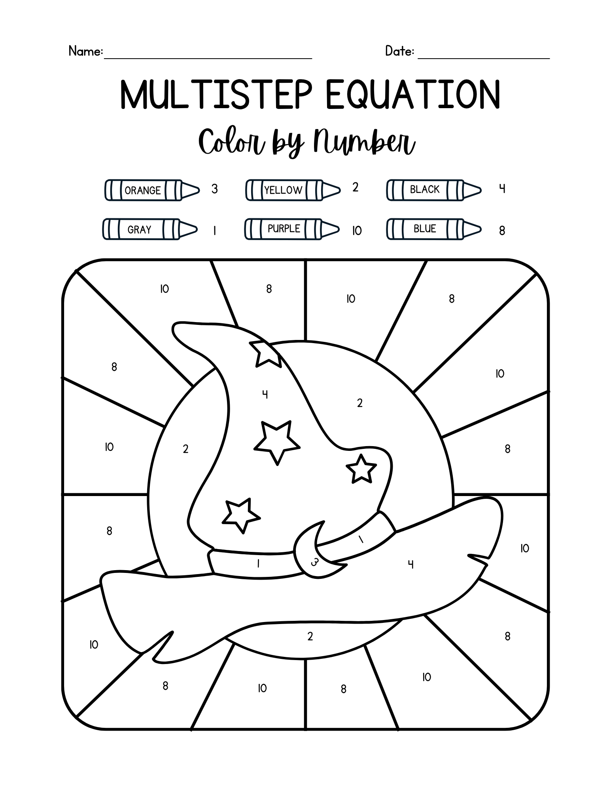

Grace Dittman
Block 2 Math
Block 3 Math
ESS
Lesson Plans
Résumé
Photos
Search
Home
›
Block 3 Math
›
Week 9
›
Activities
›
Multistep Equations Color-by-Number (Answer Key)
Multistep Equations Color-by-Number (Answer Key)
MULTISTEPcbnKEY.png
← Kuta Software worksheet
Multistep Equations Homework →
Open full size

Goes with
Multistep Equations Color-by-Number
Multistep Color by Number.png
Lesson plans from the same week
Distributive Property & Variables on Both Sides
10/23, 10/26
Variables on Both Sides & Multistep Equations
10/27, 10/28
Multistep Equations Color-by-Number
10/29, 10/30
← Kuta Software worksheet
Multistep Equations Homework →